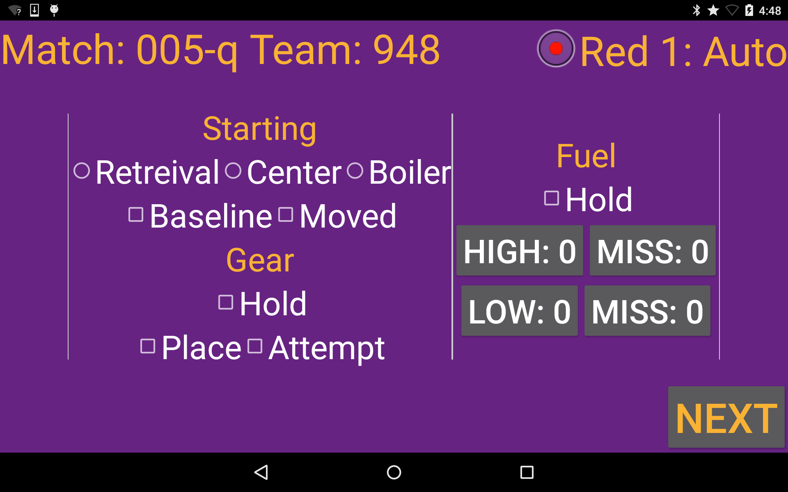

This system put together by the Issaquah Robotics Society uses 6 tablets networked to a central laptop to collect data. Each tablet has a custom android app and is set to follow a single robot. Scouters will press buttons for different actions on the field, which send real time data to the server through http. The server then inputs the data to a PostgreSQL server.
The current plan for the next season is to smooth out operation of the system so it can be run by anyone, without any console commands or special setup, as well as to add more integrated data viewing to the server website.